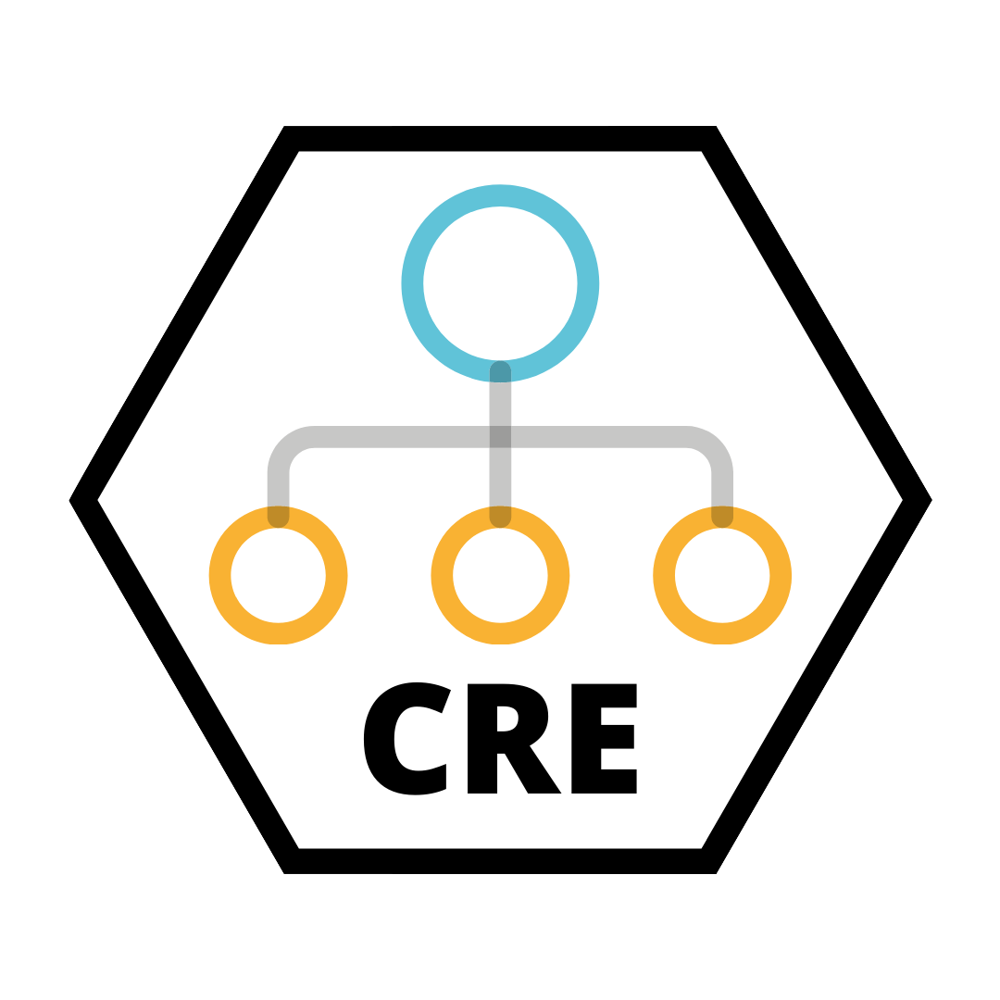

CRE 
Overview
Causal subgroup identification is a powerful statistical tool for determining vulnerabilities in a population with respect to a particular treatment. As causal machine learning provides an efficient and accurate tool for data-driven subgroup identification, software packages are proving an essential means to easily disseminate and reproduce these algorithms broadly.
The CRE Package, written in R and available on GitHub, implements the recently developed Causal Rule Ensemble (CRE) algorithm, a flexible and precise method for denovo subgroup discovery. The CRE approach focuses on identifying drivers of treatment heterogeneity in observational or randomized studies in the presence of an intervention or treatment.
Package Details
The Package is centered on one R function, cre(), that
conducts the entirety of the CRE algorithm given a dataset and a series
of input parameters from the user. The cre() function calls
on a number of helper functions to conduct discovery and inference
subsample analysis. For example, for the estimation of Individual
Treatment Effects, users can select a particular method from a large
list of methodologies, each of which vary with respect to their speed
and precision. The parameter selections will determine which helper
functions the cre() calls.
The CRE method splits the inputted data into discovery and inference subsamples. On the discovery subsample, it generates and filters causal rules that explain the heterogeneity in treatment effects. It then applies these rules to the inference subsample and estimates the Conditional Average Treatment Effect (CATE) for each subgroup.
The final output of the cre() is the list of selected
causal rules that identify the subgroups with higher heterogeneity in
the effects and the matrix of estimated CATEs for each rule, both of
which are highly accessible and interpretable.
Note: A sensitivity analysis for unmeasured confounding will also be implemented in a later version.
Applications
Through this package, any user can apply the method to a variety of new datasets. The applications of the CRE method and R package are vast, with a notable potential impact in the field of public health. We intend to apply the method to a dataset linking air pollution (PM2.5) data to Medicare mortality data across the United States. Our empirical goal is to identify the most vulnerable communities, to inform policymakers on how to mitigate the negative health and economic effects on these subgroups and reduce inequality.